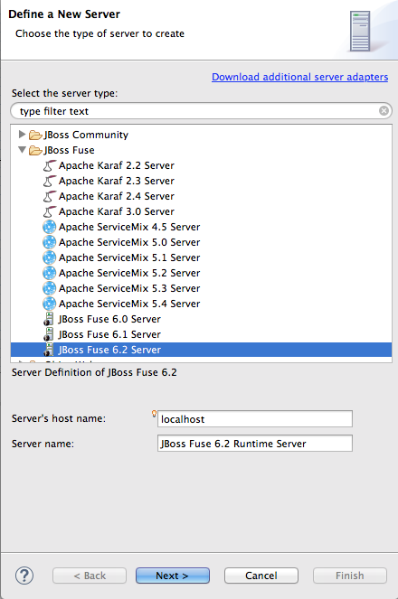
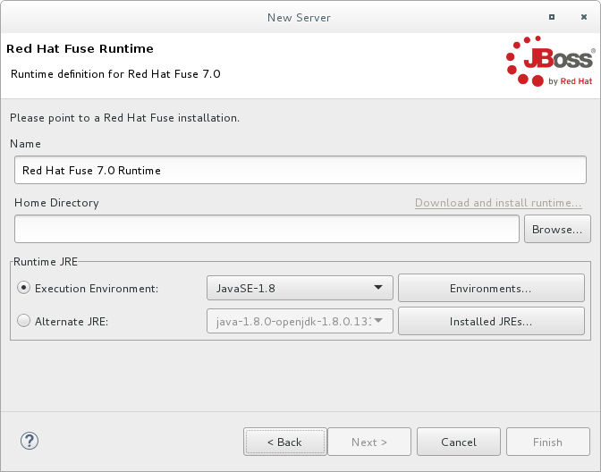
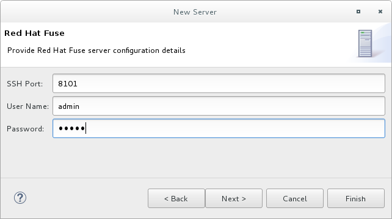
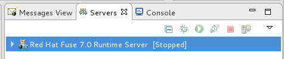
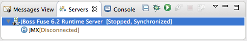

For the tooling to manage a server, you need to add the server to the Servers list. Once added, the server appears in Servers panel, where you can connect to it and publish your Fuse Integration projects.
![[Note]](imagesdb/note.png) | Note |
|---|---|
If adding a Red Hat JBoss Fuse 6.2+ or 6.3 server, it's recommended that you edit
its |
You can add a new server to the Servers panel in three ways:
In Servers panel, click the link No servers are available. Click this link to create a new server....
Note This link appears in Servers panel only when no server has been defined.
If you defined and added a server when you first created your project, the Servers panel displays that server.
Right-click in Servers panel to open the context menu, then select > .
On the menu bar, select > > > > .
In the Define a New Server dialog, expand the
JBoss Fusenode to expose the list of available server options:Click the server you want to add.
In Server's host name, accept the default (
localhost).Note The address of
localhostis0.0.0.0.In Server name, accept the default, or enter a different name for the runtime server.
In Server runtime environment, accept the default, or enter a different name for the server runtime environment.
Click to open the server's Runtime definition page:
Note If the server is not already installed on your machine, you can install it now by clicking the link Download and install runtime... and following the site's download instructions. Depending on the site, you may be required to provide valid credentials before you can continue the download process.
Accept the default for Name.
In Home Directory, enter the path where the server runtime is installed, or click to find and select it.
Select the runtime JRE from the drop-down menu next to Execution Environment.
If the version you want does not appear on the list, click the button and select the version from that list. The JRE version you select must be installed on your machine.
Note JBoss Fuse 6.3 requires either JRE version 1.8 or 1.7.
Leave the Alternate JRE option as is.
Click to save the server's runtime definition and open its Configuration details page:
Accept the default for SSH Port (
8101).The runtime uses the SSH port to connect to the server's Karaf shell. If this default is incorrect for your setup, you can discover the correct port number by looking in the server's
installDir/etc/org.apache.karaf.shell.cfgfile.In User Name, enter the name used to log into the server.
In the case of Red Hat JBoss Fuse, this is a user name stored in the Red Hat JBoss Fuse
installDir/etc/users.propertiesfile.Note If the default user has been activated (uncommented) in the
/etc/users.propertiesfile, the tooling autofills User Name and Password with the default user's name and password, as shown in Step 11. The default user is already activated in JBoss Fuse 6.2, but not in JBoss Fuse 6.0 or 6.1.If one has not been set, you can either add one to that file using the format
user=password,role(for example,joe=secret,Administrator), or you can set one using the karafjaascommand set:jaas:realms—to list the realmsjaas:manage --index 1—to edit the first (server) realmjaas:useradd <username> <password>—to add a user and associated passwordjaas:roleadd <username> Administrator—to specify the new user's rolejaas:update—to update the realm with the new user information
If a jaas realm has already been selected for the server, you can discover the user name by issuing the command
JBossFuse:karaf@root>jaas:users.In Password, enter the password required for User Name to log into the server.
Click to save the server's configuration details.
The server runtime will appear in Servers panel. For example:
Expanding the server node exposes the server's JMX node:
